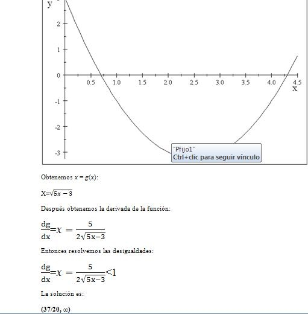
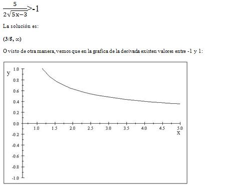
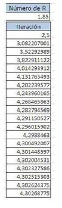

La teoría de métodos estacionarios se estableció sólidamente con el trabajo de D.M. Young, que empezó en la década de 1950.
método del gradiente conjugado se inventó en esa misma década, con desarrollos independientes de Cornelius Lanczos, Magnus Hestenes y Eduard Stiefel, pero su naturaleza y aplicación se malentendieron en esa época.
Sólo en la década de 1970 se puso de manifiesto que estos métodos los cuales tienden a funcionan muy bien para resolver ecuaciones de derivadas parciales, especialmente del tipo elíptico.
Describiendo el metodo y su aplicación.
El método del punto fijo es un método iterativo que permite resolver sistemas de ecuaciones no necesariamente lineales.
En particular se puede utilizar para determinar raíces de una función de la forma f(x), siempre y cuando se cumplan los criterios de convergencia.
El método de iteración de punto fijo, también denominado método de aproximación sucesiva, requiere volver a escribir la ecuación
f(x) = 0 en la forma
x = g(x).
El procedimiento empieza con una estimación o conjetura inicial de x, que es mejorada por iteración hasta alcanzar la convergencia.
Para que converja, la derivada (dg / dx) debe ser menor que 1 en magnitud (al menos para los valores x que se encuentran durante las iteraciones).
La convergencia será establecida mediante el requisito de que el cambio en x de una iteración a la siguiente no sea mayor en magnitud que alguna pequeña cantidad €.
Pasos a seguir
1. Se ubica la raíz de f(x) analizando la gráfica.
2. Se obtiene un despeje x = g(x) de la función.
3. Obtenemos de x = g(x) su derivada g´(x).
4. Resolviendo la desigualdad -1 ≤ g´(x).≤ 1 obtenemos el rango de valores en los cuales esta el punto fijo llamado R.
5. Con R buscamos la raíz en g(x), es decir g(R) = R haciendo iteración de las operaciones.
Sea f(x) = x2 − 5x + 3 una función, encuentre la raíz.
| Ubicamos la raíz analizando la gráfica |
|

|
|

|
Ya que se tienen los valores del rango R, encontramos la raíz haciendo la iteración de las operaciones: |
|

|
En la tabla se puede ver el valor que en este caso se uso de R, la iteración consiste en usar ese valor en x = g(x) para obtener los siguientes valores haciendo la misma operación usando el valor anterior.
Después de un número considerable de iteraciones obtenemos la raíz en 4.30268775.
Aquí puedes descargar el Código, el cual fue desarrollado en el lenguaje de Python, si tu computadora no tiene descargado algún compilador compatible con el lenguaje puedes ir a nuestra sección de como descargar el compilador que recomendamos para su uso.
Presiona el link para descargar el algoritmo.
*** Metodo de Punto Fijo ***